EXAMPLE 02 · 가로형
체험 캠프에는 활동 안내를.
한 면 124 × 93 mm · 펼침 248 × 93 mm

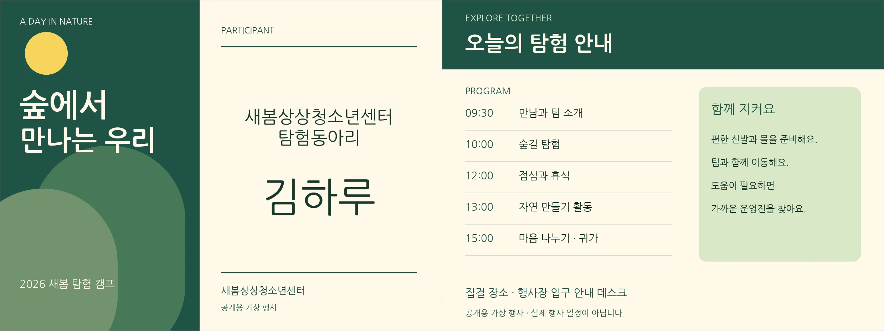
크게 보기 ↗WINDOWS 로컬 업무도구
명단 파일 하나를 불러와 출석부·식비명단 XLSX와 명찰 PDF를 만드세요. 파일 처리는 내 PC에서 이루어집니다.
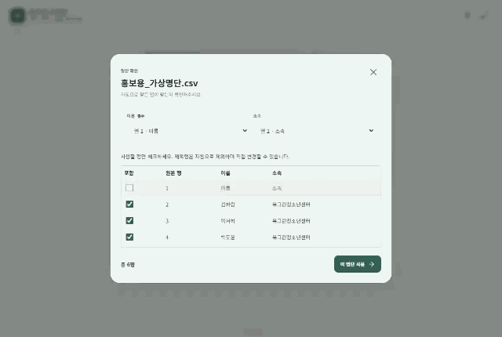
NEW 명찰 준비가 더 편해졌어요
앞면에는 이름과 소속을, 뒷면에는 오늘의 일정과 안내를.
준비한 이미지로 앞·뒷면이 이어지는 접이식 명찰을 만드세요.
동아리 축제의 분위기는 앞면에 담고,
참가자가 자주 찾는 일정은 뒷면에 담았어요.
가상 행사 · 별빛 청소년 동아리 축제
가상 소속 · 별빛마루청소년센터 상상동아리
가명 · 김하루
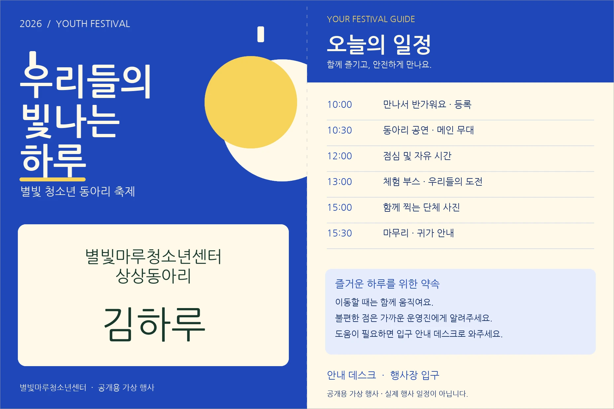
크게 보기 ↗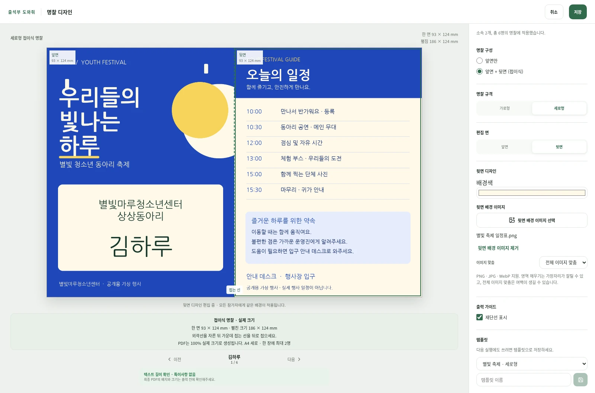
실제 화면 확대 ↗명찰 구성에서 ‘앞면 + 뒷면 (접이식)’을 선택하세요.
미리 만든 일정표·행사 안내 이미지를 불러오세요. 모든 참가자에게 같은 뒷면이 적용됩니다.
두 면의 실제 비율과 가운데 접는 선을 확인하고 PDF로 저장하세요.
PNG · JPG · WebP 지원. ‘전체 이미지 맞춤’으로 안내 내용이 모두 보이게 넣을 수 있어요.
한 면 124 × 93 mm · 펼침 248 × 93 mm

크게 보기 ↗A4 한 면에 100% 실제 크기로 출력 → 외곽선 재단 → 가운데 점선을 따라 뒤로 접기.
세로형은 A4 세로, 가로형은 A4 가로에 최대 2명씩 배치됩니다. 첫 장을 출력해 크기를 확인해주세요.
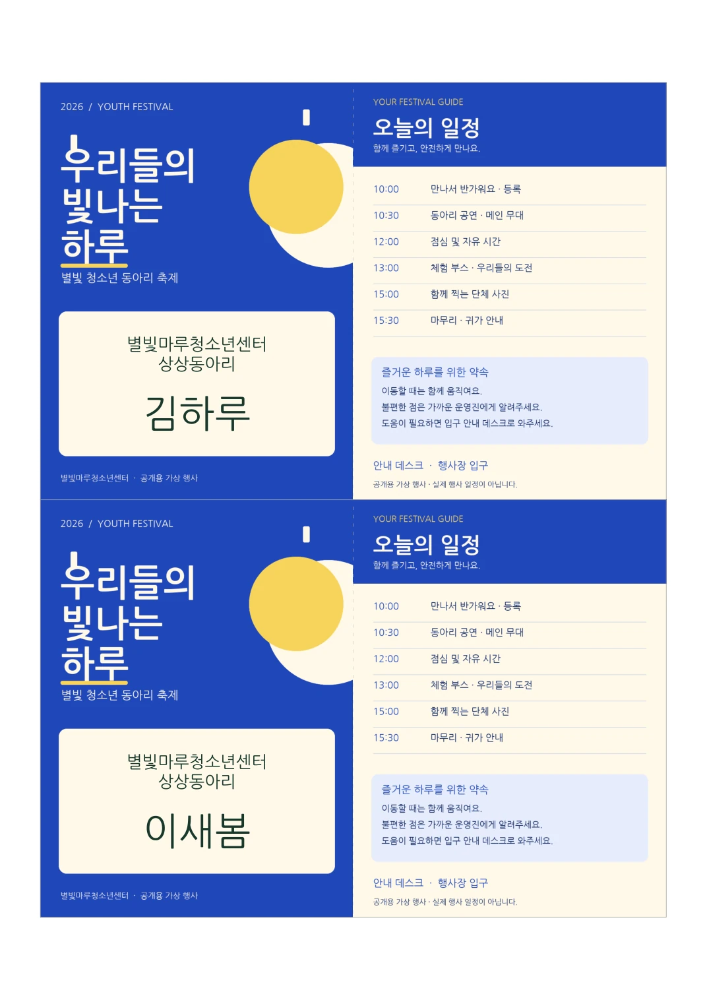
실제 A4 배치 보기 ↗같은 소속의 문구와 줄바꿈을 함께 바꾸세요. 참가자마다 반복해서 수정할 필요가 줄어듭니다.
일괄 편집 화면 보기 ↗같은 이미지를 효율적으로 처리하고, 저장 중에는 처리 개수·현재 단계·경과 시간을 보여줍니다.
최신 버전 다운로드 ↓이 영역의 디자인은 기능 소개를 위해 새로 만든 예시입니다. 행사명·기관명·동아리·참가자 이름·일정은 모두 가상이며, 실제 개인정보와 행사 로고는 사용하지 않았습니다.
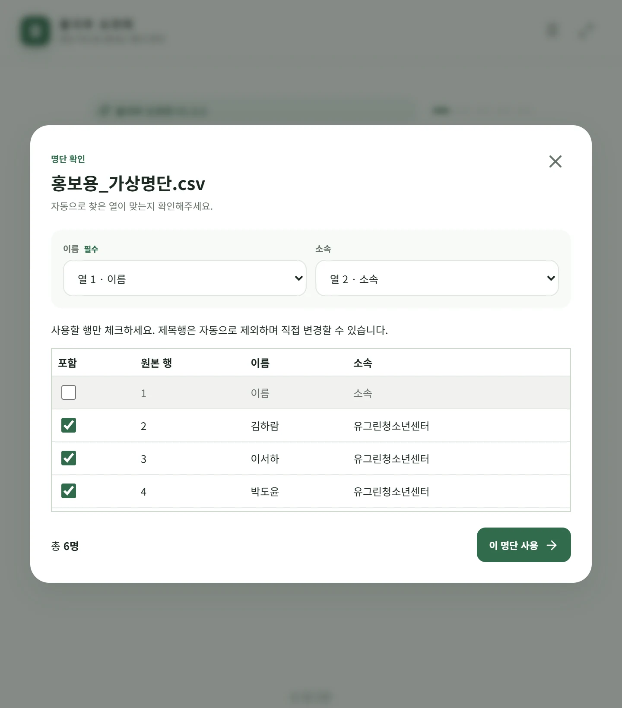
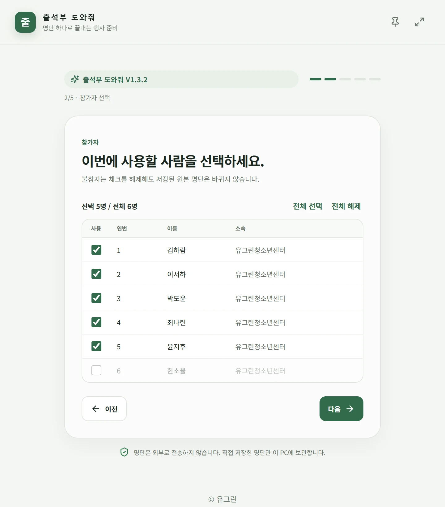
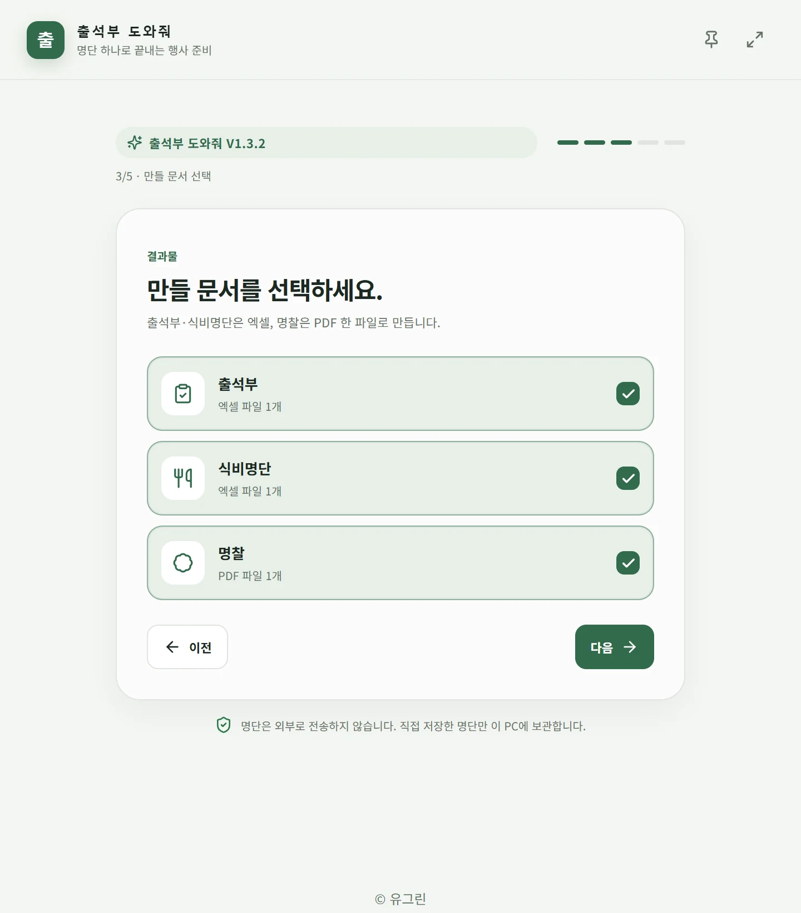
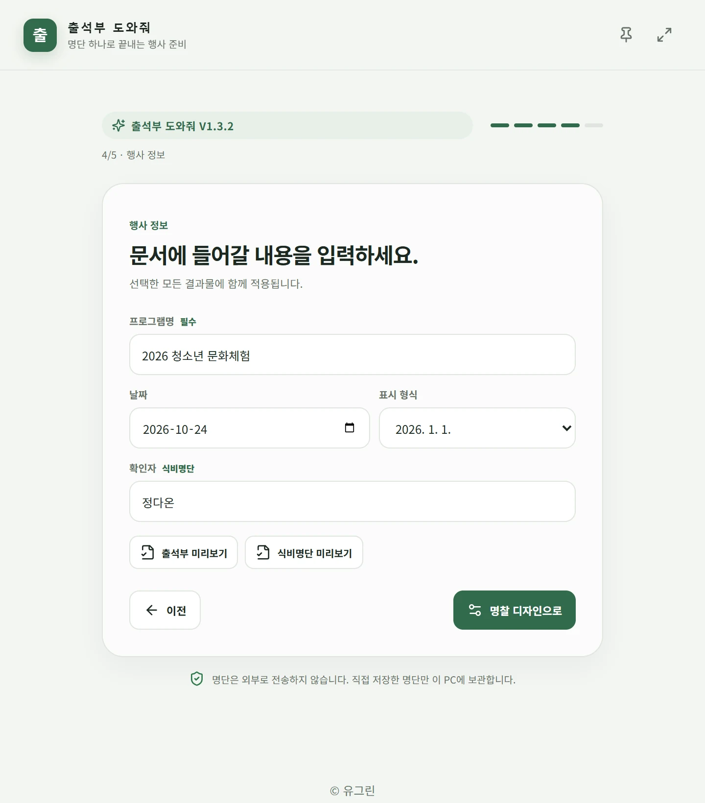
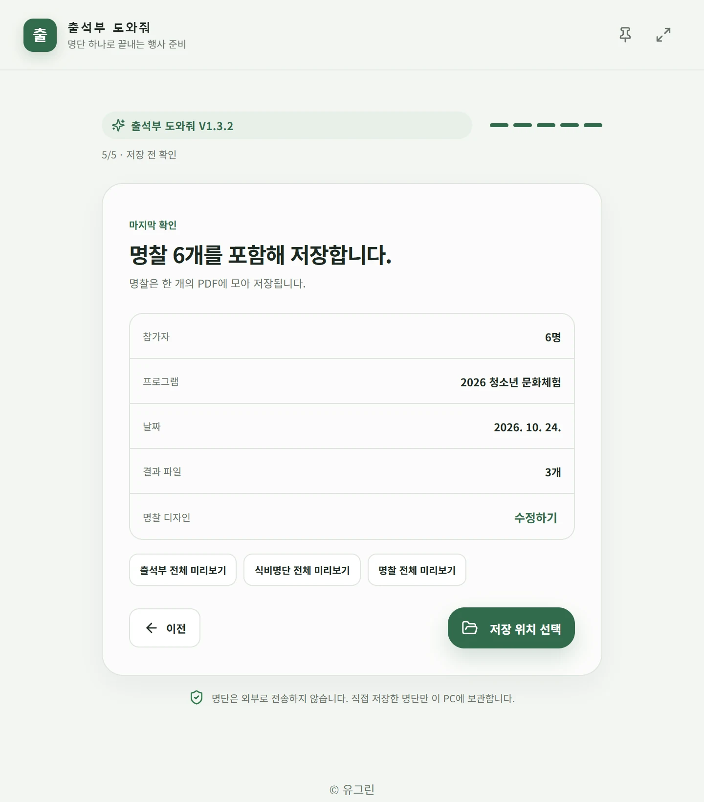
가상의 명단과 행사로 촬영했습니다. 명찰 편집 단계는 v1.4.5의 새 화면이며, 나머지는 기존 사용 흐름 화면입니다.
출석 확인부터 식비 서명, 참가자 명찰까지.
각 문서에 맞는 파일로 만듭니다.
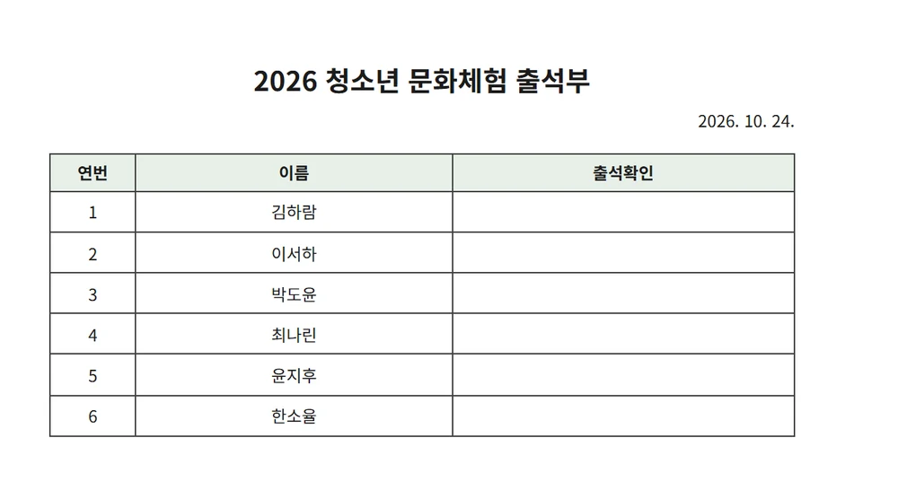
연번·이름·출석확인 칸을 정리한
행사 출석 확인용 엑셀.
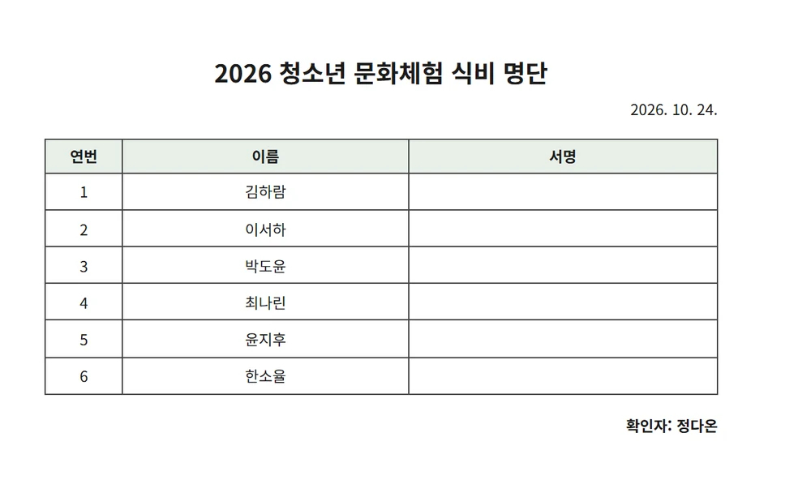
서명 칸과 확인자를 담은
식비 확인용 엑셀.
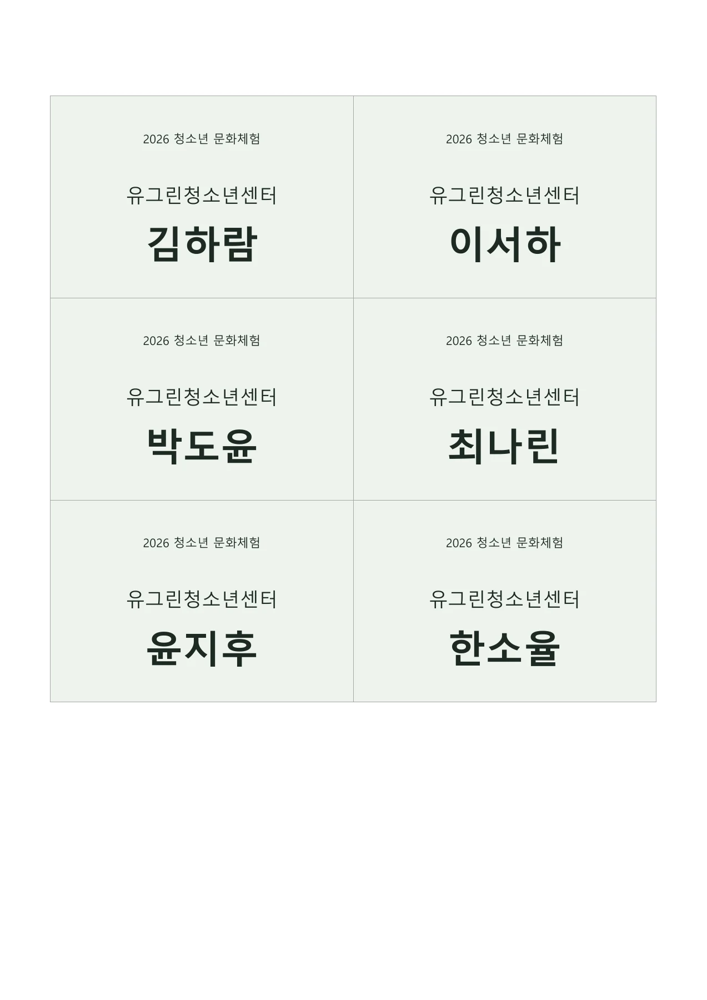
명찰을 A4에 자동 배치하고,
재단선과 함께 한 PDF로.
출석부·식비명단은 XLSX, 명찰은 PDF입니다. 인쇄 전 미리보기와 프린터 설정을 확인해주세요.
이름은 크게, 소속은 보기 좋게.
미리보기 위에서 텍스트를 드래그하고
크기와 색상을 조정하세요.
앞면만 출력하거나, 일정표 이미지를 뒷면에 넣어 접이식 명찰로 만들 수 있습니다.
소속을 더블클릭해 같은 소속에 함께 적용하거나, 소속별 목록에서 한 번에 정리하세요. 원본 명단과 엑셀은 유지됩니다. 저장 중에는 현재 처리 단계와 경과 시간을 확인할 수 있습니다.
배경·로고·뒷면 이미지 선택과 템플릿 보관은 Windows 앱에서 지원합니다.
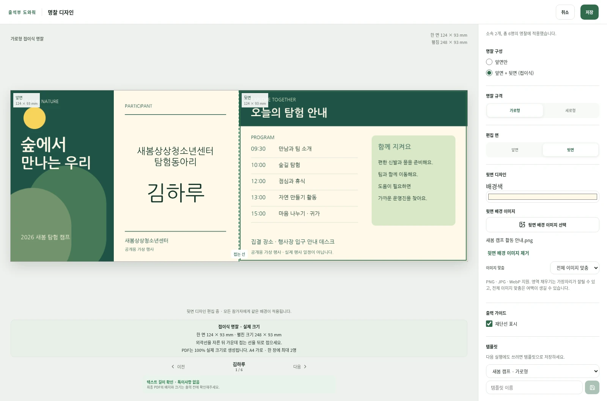
파일 읽기와 문서 생성은
Windows 앱에서 처리합니다.
명단을 서버로 업로드하거나
자동으로 동기화하지 않습니다.
직접 선택한 명단을 읽고,
원본을 변경하지 않습니다.
명단 보관은 직접 저장을 선택한 경우에만, Windows 계정 기반 암호화로 이루어집니다. 생성된 XLSX·PDF는 별도 암호화되지 않습니다. 개인정보 처리 안내 ↗
출석부 도와줘와 함께 시작하세요.
v1.4.5 · 2026.10.27 · Windows x64 설치 ZIP
ZIP을 푼 뒤 설치 EXE를 실행하세요. WebView2가 없으면 설치 중 인터넷 연결이 필요합니다.